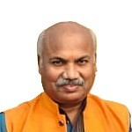
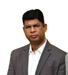

The Institution of Engineers (India) [IEI] is the largest multi-disciplinary professional body of engineers dedicated to promote the general advancement of engineering amongst its members and persons attached to the Institution.
The IEI Indore Local Centre is a distinguished regional centre of The Institution of Engineers (India). The Indore Centre traces its origin to 1969, when it was established as a Sub-Centre with around 50 corporate members. With consistent growth in membership, professional activities, and regional impact, it was subsequently upgraded and recognized as a full-fledged Local Centre of IEI. Located in the academic environment of the SGSITS campus, Indore, the Centre serves as a vibrant professional platform for engineers, academicians, industry experts, researchers, and student members across Indore and nearby regions.
Over more than five decades, the Indore Local Centre has:
The Centre celebrated its Golden Jubilee in 2020, marking 50 years of dedicated service to the engineering fraternity.
The Institution of Engineers (India) (IEI), established in 1920 and incorporated by Royal Charter in 1935, is the professional body of engineers in India. Headquartered in Kolkata, the Institution is administered by a National Council headed by the President.
With a nationwide network of State and Local Centres and international chapters, IEI promotes the advancement of engineering knowledge, professional ethics, research, and continuing professional development across fifteen engineering disciplines. It conducts the AMIE examinations, awards professional certifications such as Chartered Engineer and Professional Engineer, publishes peer-reviewed journals, and represents India in leading international engineering bodies.
For over a century, IEI has played a significant role in strengthening engineering standards and contributing to the nation’s industrial and technological development.
Click to visit IE (India) website for more information
| Sr. No. | Name | Period |
|---|---|---|
| 1 | Dr. S. M. Dasgupta | 1969-1971 |
| 2 | Shri P. G. Joglekar | 1971-1973 |
| 3 | Prof. P. N. Malhotra | 1973-1975 |
| 4 | Lt. Col. P. P. Varma (Retd.) | 1975-1977 |
| 5 | Prof. M. V. Rangnath | 1977-1979 |
| 6 | Prof. D. G. Dhawlikar | 1979-1981 |
| 7 | Shri G. B. Jakhetia | 1981-1983 |
| 8 | Shri T. N. Kutumbale | 1983-1985 |
| 9 | Shri R. L. Gupta | 1985-1987 |
| 10 | Dr. M. G. Sharma | 1987-1990 |
| 11 | Shri R. B. Pande | 1990-1992 |
| 12 | Dr. A. N. Patel | 1992-1994 |
| 13 | Dr. K. S. Varma | 1994-1996 |
| 14 | Dr. N. K. Nagar | 1996-1998 |
| 15 | Er. G. D. Gidwani | 1998-2000 |
| 16 | Er. H. I. Mehta | 2000-2002 |
| 17 | Dr. R. K. Shrivastava | 2002-2004 |
| 18 | Dr. M. D. Agrawal | 2004-2006 |
| 19 | Er. Vijay S. Charhate | 2006-2008 |
| 20 | Er. S. B. Ajmera | 2008-2010 |
| 21 | Er. S. B. Sarwate | 2010-2012 |
| 22 | Prof. D. A. Mehta | 2012-2014 |
| 23 | Dr. Ashesh Tiwari | 2014-2016 |
| 24 | Dr. P. P. Bansod | 2016-2018 |
| 25 | Dr. Shilpa Tripathi | 2018-2021 |
| 26 | Er. R. P. Gautam | 2021-2023 |
| 27 | Dr. Dinesh Shukla | 2023-2025 |
| Sr. No. | Name | Period |
|---|---|---|
| 1 | Prof. D. G. Dhawlikar | 1969-71 |
| 2 | Prof. N. Sarkar | 1971-73 |
| 3 | Shri B. D. Suryawanshi | 1973-74 |
| 4 | Shri K. S. Srinivasan | 1974-75 |
| 5 | Lt. Col. P. P. Varma (Retd.) | 1974-75 |
| 6 | Prof. M. V. Rangnath | 1975-77 |
| 7 | Shri N. C. Jain | 1977-79 |
| 8 | Shri T. N. Kutumbale | 1979-83 |
| 9 | Shri H. I. Mehta | 1983-87 |
| 10 | Shri P. R. Turakhia | 1987-88 |
| 11 | Shri H. I. Mehta | 1988-90 |
| 12 | Dr. K. S. Varma | 1990-94 |
| 13 | Prof. H. S. Mehta | 1994-96 |
| 14 | Er. G. D. Gidwani | 1996-98 |
| 15 | Dr. R. K. Shrivastava | 1998-2001 |
| 16 | Dr. N. K. Nagar | 2001-2002 |
| 17 | Dr. M. D. Agrawal | 2002-2004 |
| 18 | Er. Vijay Charhate | 2004-2006 |
| 19 | Dr. Abhay Gupta | 2006-2007 |
| 20 | Er. S. B. Ajmera | 2007-2008 |
| 21 | Er. S. B. Sarwate | 2008-2010 |
| 22 | Prof. D. A. Mehta | 2010-2012 |
| 23 | Dr. Ashesh Tiwari | 2012-2014 |
| 24 | Dr. P. P. Bansod | 2014-2016 |
| 25 | Er. Dinesh Wadhwa | 2016-2018 |
| 26 | Er. Deepak S. Shah | 2018-2021 |
| 27 | Er. D. S. Parihar | 2021-2023 |
| 28 | Er. Ramesh S. Chouhan | 2023-2025 |

Chairman
Prof. (Dr.) Sunil K. Somani is a distinguished academician and former Vice-Chancellor of Medi-Caps and Oriental University, Indore. He holds a PhD in Mechanical Engineering and has over 35 years of experience in teaching, industry, and administration. He has contributed to leading institutions and authored more than 100 publications and three books. Dr. Somani is also actively involved in national academic bodies and professional organizations. Apart from academics, he is an accomplished international chess player, coach, and promoter of the sport.

Honorary Secretary
Dr. Sunil Kumar Ahirwar is an Associate Professor of Civil Engineering at SGSITS Indore with extensive academic and industry experience. He holds a PhD from IIT Bombay and M.Tech from MNNIT Allahabad. His expertise lies in geotechnical and geoenvironmental engineering. He has guided 25 postgraduate theses and published more than 25 research papers. He has also contributed to NPTEL lectures and consultancy projects.
| Name | Designation | Discipline | |
|---|---|---|---|
| Prof. (Dr.) Sunil K. Somani | Chairman | Mechanical Engineering | sksomani123@yahoo.com |
| Dr. Sunil Kumar Ahirwar | Honorary Secretary | Civil Engineering | skasgsits@gmail.com |
| Er. Dinesh Kumar Shukla | Immediate Past Chairman | Mechanical Engineering | shuklapune@yahoo.com |
| Er. Ramesh Singh Chouhan | Immediate Past Honorary Secretary | Electrical Engineering | rchouhan114@gmail.com |
| Er. Rajeev B. Arya | Elected Member | Architectural Engineering | rajeev.arya769@gmail.com |
| Er. Prabal Ashok Jadhav | Elected Member | Chemical Engineering | prabal@wesindia.co.in |
| Dr. Neha Gupta | Elected Member | Computer Engineering | neha.gupta@suas.ac.in |
| Dr. Raksha Parolkar | Elected Member | Civil Engineering | raksha.parolkar@gmail.com |
| Er. Anil Kumar Khandelwal | Elected Member | Civil Engineering | anil.associates@gmail.com |
| Er. Apoorva Joshi | Elected Member | Civil Engineering | apoorva.j@gmail.com |
| Dr. Rajesh Arya | Elected Member | Electrical Engineering | aryarajesh@yahoo.com |
| Er. Vineet Kumar Mishra | Elected Member | Electrical Engineering | sgsits.vineet@gmail.com |
| Dr. Gireesh Gaurav Soni | Elected Member | Electronics & Telecommunication Engineering | gireeshsoni@gmail.com |
| Er. Mahesh Chandani | Elected Member | Marine Engineering | meshu433@gmail.com |
| Er. Anil Kumar Jain | Elected Member | Mechanical Engineering | aniljain15954@gmail.com |
| Dr. Gunjan Yadav | Elected Member | Mechanical Engineering | gunjanyadav86@gmail.com |
| Dr. Basant Agrawal | Elected Member | Mechanical Engineering | bas_agr@yahoo.co.in |
| Dr. Suwarna B. Torgal | Elected Member | Production Engineering | suwarnass@rediffmail.com |
| Er. Pavan Kumar Gupta | Elected Member | Textile Engineering | pawan_gupta87@yahoo.co.in |
Ex-Officio Members |
|||
| Er. Ashok Kumar Sharma | Chairman, MPSC | mpsc@ieindia.org | |
| Er. Avadhesh Kumar Choubey | Honorary Secretary, MPSC | mpsc@ieindia.org | |
| Dr.(Mrs.) Shilpa Tripathi | Council Member | Chemical Engineering | shilpatripathi103@gmail.com |
| Er. Rakesh Rathore | Council Member, MPSC | rakesh.rathore0759@gmail.com | |
| Er. R. P. Gautam | Member attached to ILC & elected to MPSC | Electrical Engineering | rajendragautam101@gmail.com |
| Dr. Sanwarlal Sharma | Member attached to ILC & elected to MPSC | drsanwaria10@gmail.com |
Membership in the Institution of Engineers connects you to a nationwide community of professionals, gives you access to our publications and events, and lets you contribute to shaping the future of engineering in India.
Get in Touch →